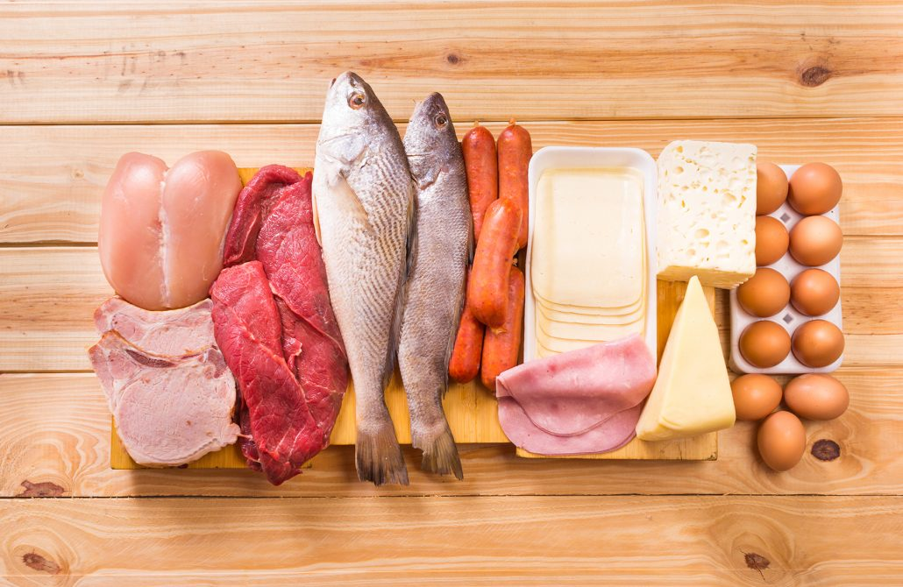

Fresh Fish

Description
Describe the fresh meat used in the recipe, highlighting its quality, tenderness, and succulence.
Emphasize the versatility of fresh meat and how it lends itself
well to grilling, allowing for delicious and flavorful results.
Mention any specific type of fresh meat used in the recipe, such as beef, lamb, pork, or a combination.
Ingredients
- List all the ingredients required for the recipe.
- Include specific quantities or measurements, as well as any alternative options, substitutions for certain ingredients.
Steps
- Provide an overview of the necessary preparations before grilling, such as marinating the fresh meat soaking skewers, or preheating the grill.
- Explain the process of assembling the skewers with the fresh meat and any accompanying vegetables or ingredients.
- Detail the grilling process, including preheating the grill to the appropriate temperature and placing the skewers on the grates.
- Provide contact information or links to your website or social media platforms for further engagement.